Một câu chuyện...
không bắt đầu bằng tiếng yêu.
Mà bắt đầu bằng một cái Reply.
CHAPTER I
Where Everything Started
The Reply
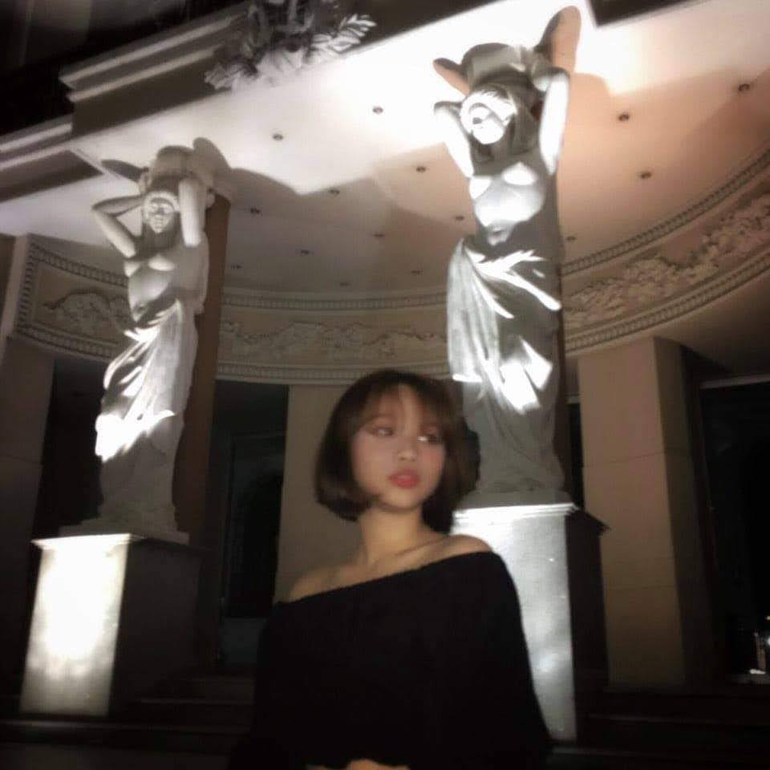
April 2021
Anh vẫn luôn tin...
Có những cuộc gặp gỡ...
không cần quá ồn ào.
Chỉ cần đúng thời điểm.
Và đúng người.
Có lẽ...
Reply năm ấy...
chính là điều đẹp nhất từng xảy ra với anh.
CHAPTER II
First Journey Together
Vũng Tàu
Summer 2021
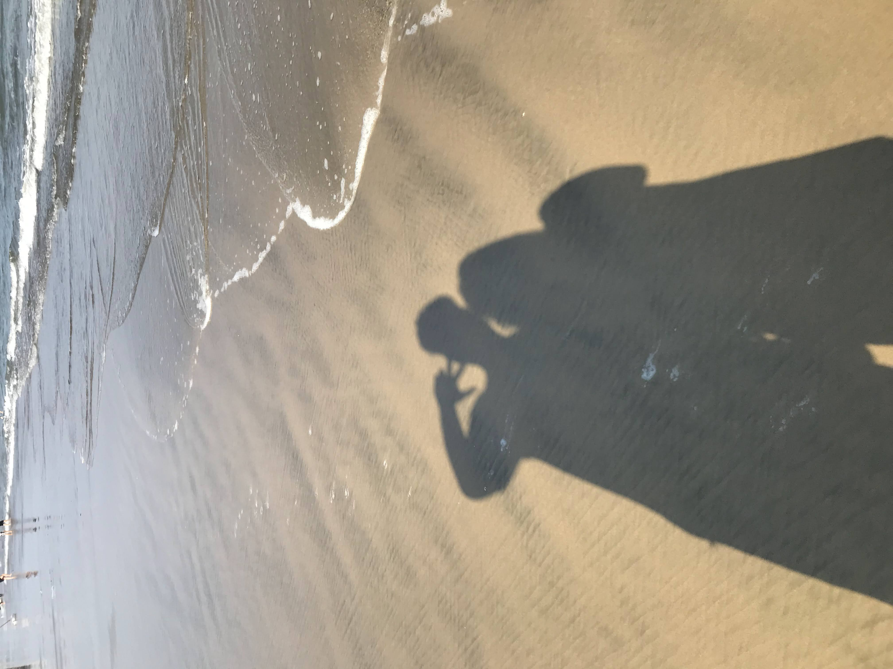
Chuyến đi ấy...
không phải là chuyến đi đầu tiên.
Nhưng là chuyến đi đầu tiên...
mà anh bắt đầu mong...
sẽ còn rất nhiều chuyến đi nữa.
Cùng em.
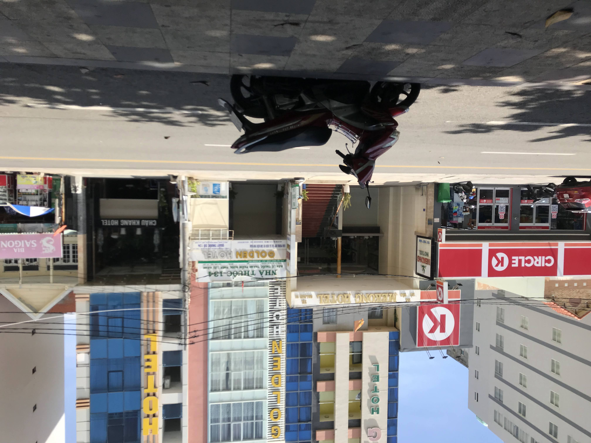
"Anh bắt đầu hiểu...
hạnh phúc không phải là đi thật nhiều nơi.
Mà là...
đi cùng đúng một người."
CHAPTER III
Ordinary Days, Extraordinary Love
Biên Hòa
2022
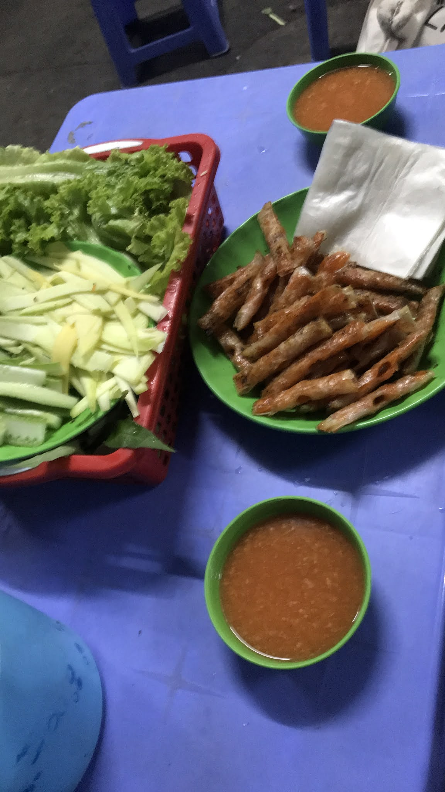
Không phải những nơi nổi tiếng...
Không phải những chuyến đi xa...
Chỉ là một buổi chiều bình thường.
Một quán quen.
Một cái nhìn.
Một nụ cười.
Và anh nhận ra...
Hạnh phúc đôi khi...
chỉ đơn giản là được ngồi cạnh em.
CHAPTER IV
Distance Means Nothing
Long Distance
Distance didn't separate us.
Người ta thường nói...
yêu xa rất khó.
Có lẽ đúng.
Nhưng điều khó nhất...
không phải là khoảng cách.
Mà là...
mỗi lần nhớ em...
anh không thể ôm em được.
"Có những ngày...
chỉ cần thấy tên em hiện trên màn hình...
đã đủ để anh mỉm cười."
CHAPTER V
Cold Weather, Warm Heart
Đà Lạt
Spring 2023
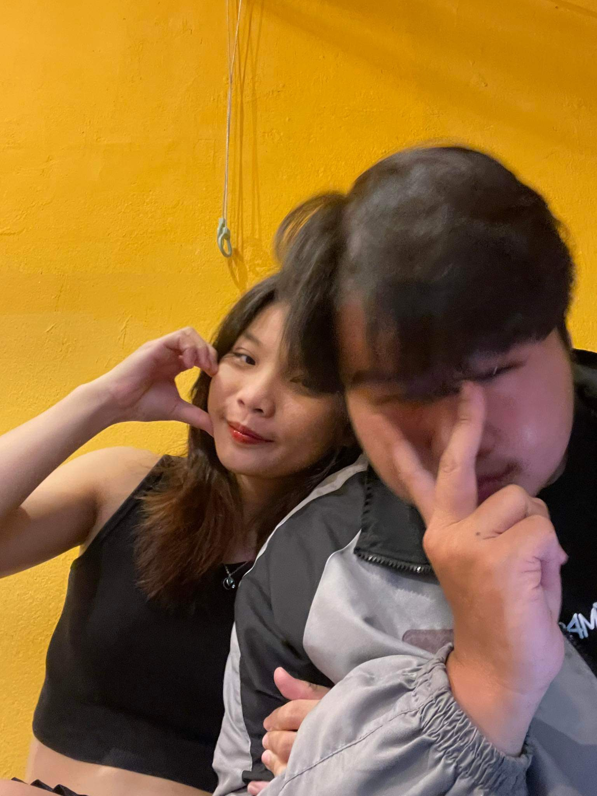
Đà Lạt...
Không chỉ đẹp vì thời tiết.
Mà đẹp...
vì ở đâu có em...
thì nơi đó...
đều trở thành kỷ niệm.
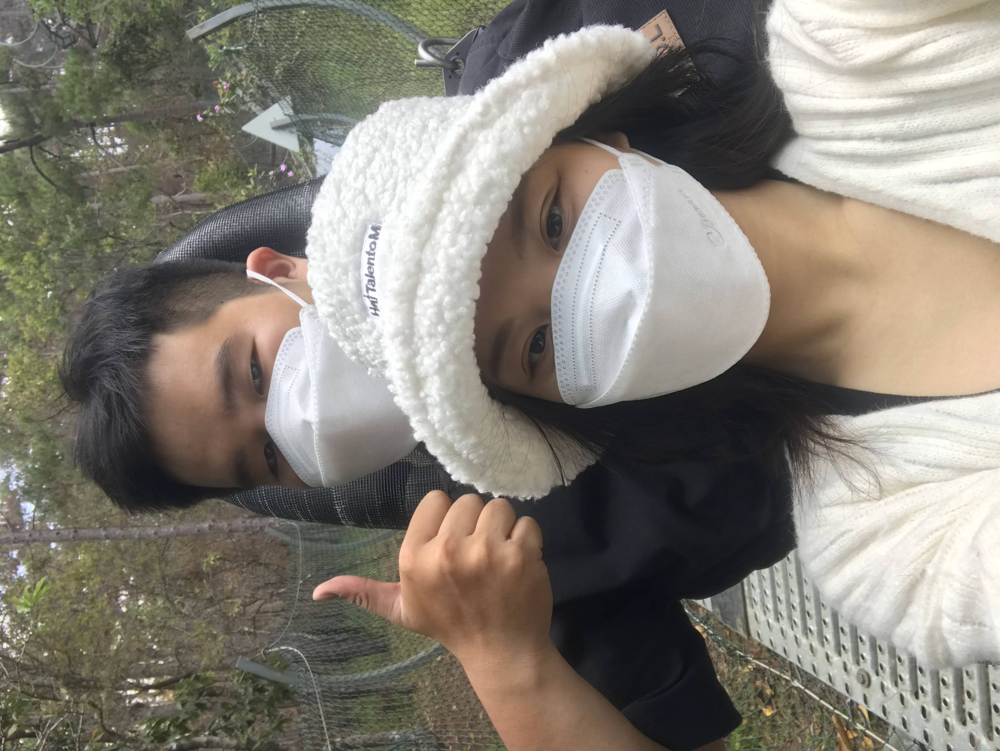
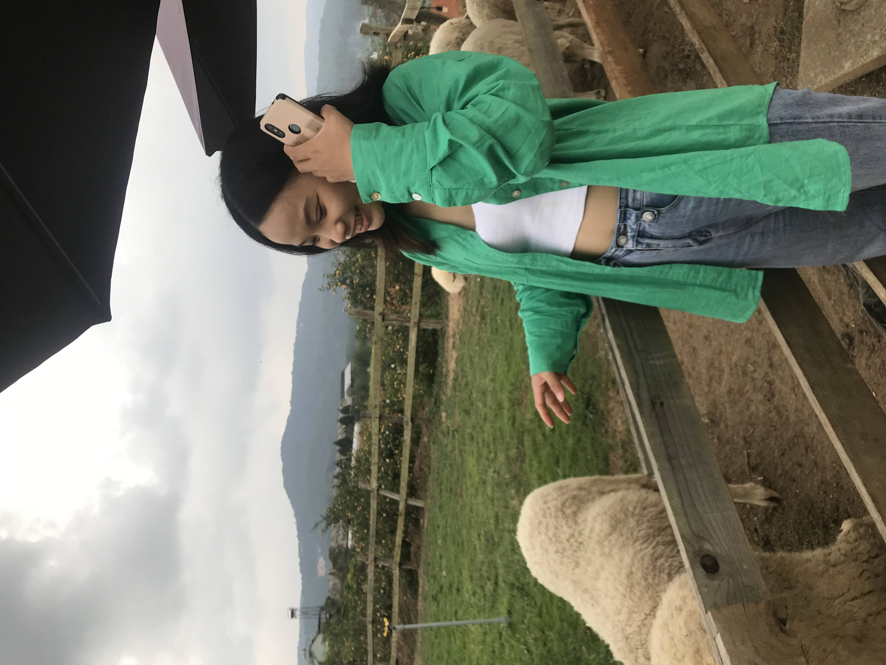
Anh nhớ...
từng con dốc.
từng ly cà phê.
từng buổi sáng lạnh.
Nhưng điều anh nhớ nhất...
vẫn luôn là em.
CHAPTER VI
The Promise
The Ring
2025
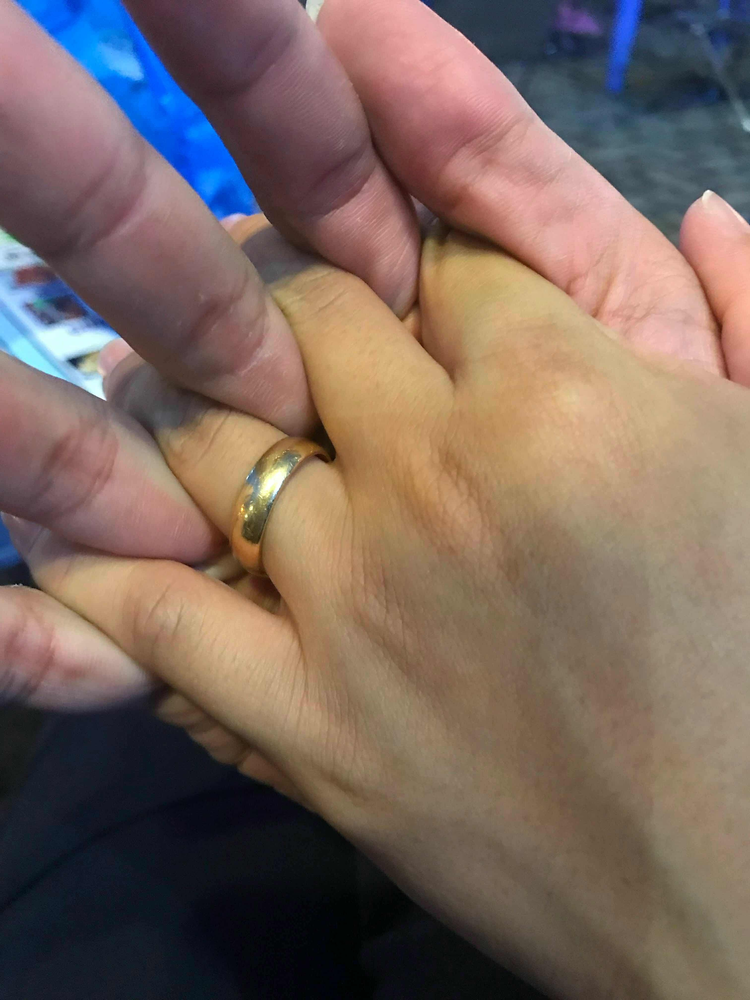
Có những món quà...
được mua bằng tiền.
Nhưng cũng có những món quà...
được mua...
bằng rất nhiều ngày cố gắng.
Ngày anh cầm chiếc nhẫn ấy...
Anh không nghĩ...
nó đẹp bao nhiêu.
Anh chỉ nghĩ...
không biết...
lúc em đeo lên...
em sẽ cười thế nào.
CHAPTER VII
Every Little Moment
Everyday
Every ordinary day became special.
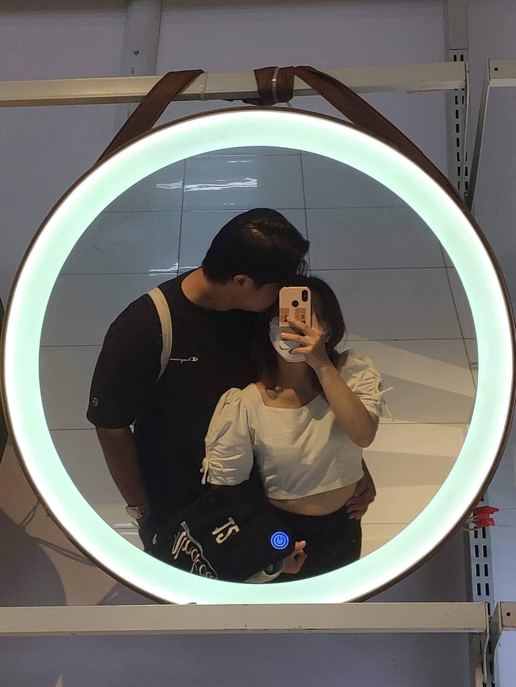
Anh từng nghĩ...
tình yêu...
phải là những chuyến đi.
Những món quà.
Hay những ngày đặc biệt.
Nhưng rồi...
anh nhận ra...
chỉ cần được ở cạnh em...
một ngày bình thường...
cũng đủ hạnh phúc rồi.
"Có em...
mọi ngày bình thường...
đều trở thành ngày đáng nhớ."
CHAPTER VIII
Dreams We Share
Future
Someday...
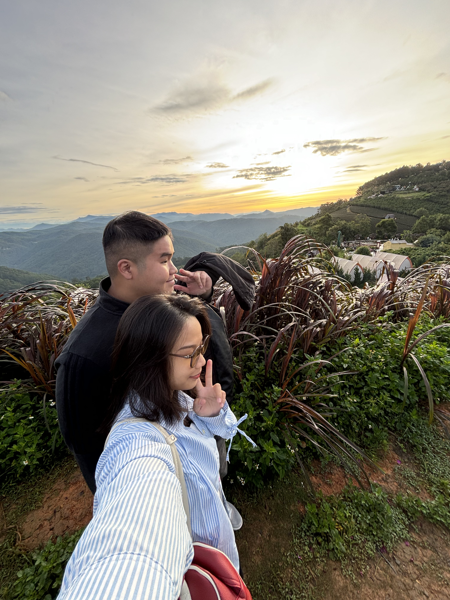
Anh không biết...
sau này...
mình sẽ sống ở đâu.
Sẽ có căn nhà như thế nào.
Sẽ nuôi bao nhiêu chú mèo.
Hay sẽ đi bao nhiêu nơi nữa.
Nhưng có một điều...
anh luôn chắc chắn.
Tương lai đó...
anh luôn mong...
sẽ có em.
"Anh không mơ về một cuộc sống hoàn hảo...
Anh chỉ mơ...
mỗi sáng thức dậy...
đều có em bên cạnh."
CHAPTER IX
Forever Begins Here
Forever
Our Story Continues...
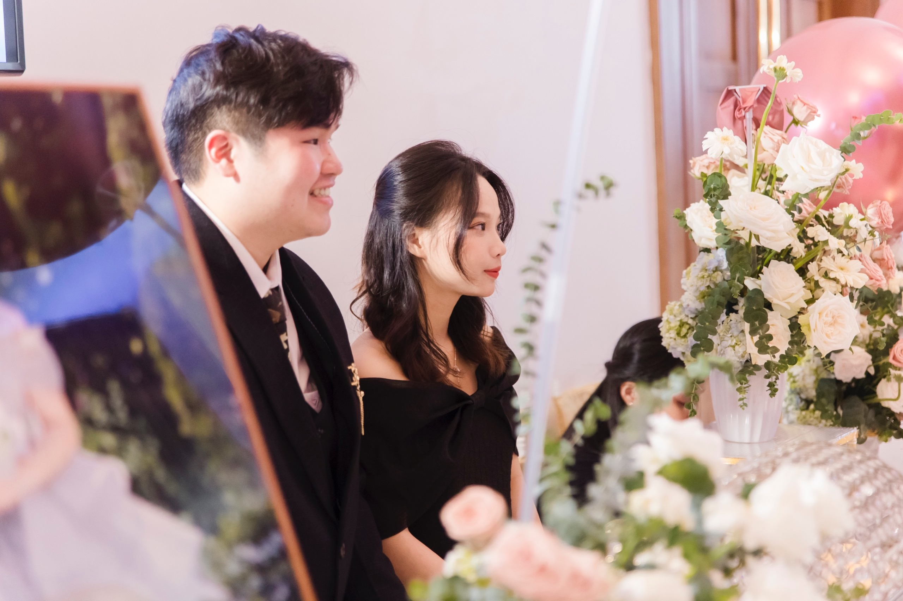
Có người hỏi anh...
"Điều em thích nhất ở cô ấy là gì?"
Anh nghĩ rất lâu.
Vì...
nếu chỉ chọn một điều...
thì thật không công bằng.
Anh yêu...
tất cả những gì thuộc về em.
Dear Hảo,
Nếu em đọc được đến đây...
thì cảm ơn em.
Cảm ơn vì đã luôn ở bên anh.
Cảm ơn vì đã để anh được yêu em.
Có lẽ...
website này rồi cũng sẽ cũ.
Ảnh sẽ cũ.
Máy tính sẽ cũ.
Điện thoại sẽ cũ.
Nhưng...
điều anh dành cho em...
thì anh hy vọng...
sẽ không bao giờ cũ.
Thương em.
Đạt.
Until I Found You
Stephen Sanchez
The Reply
Every beautiful story...
begins with a single reply.